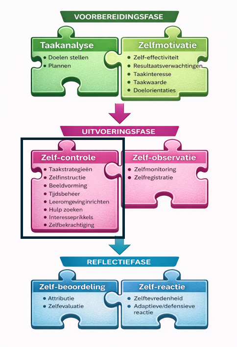
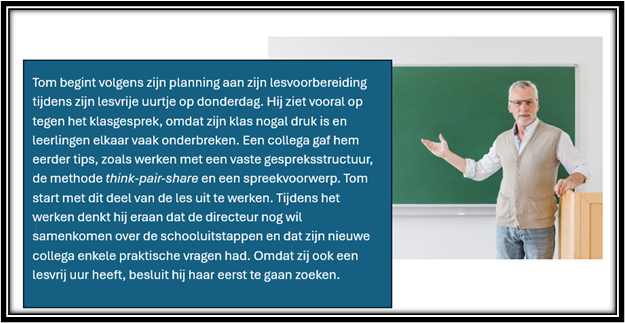
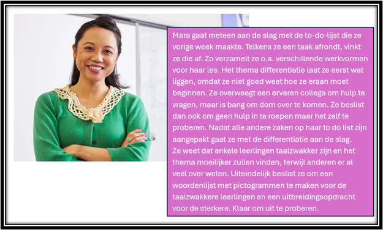
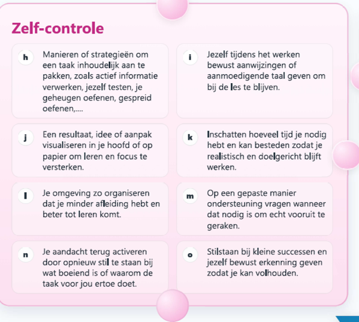
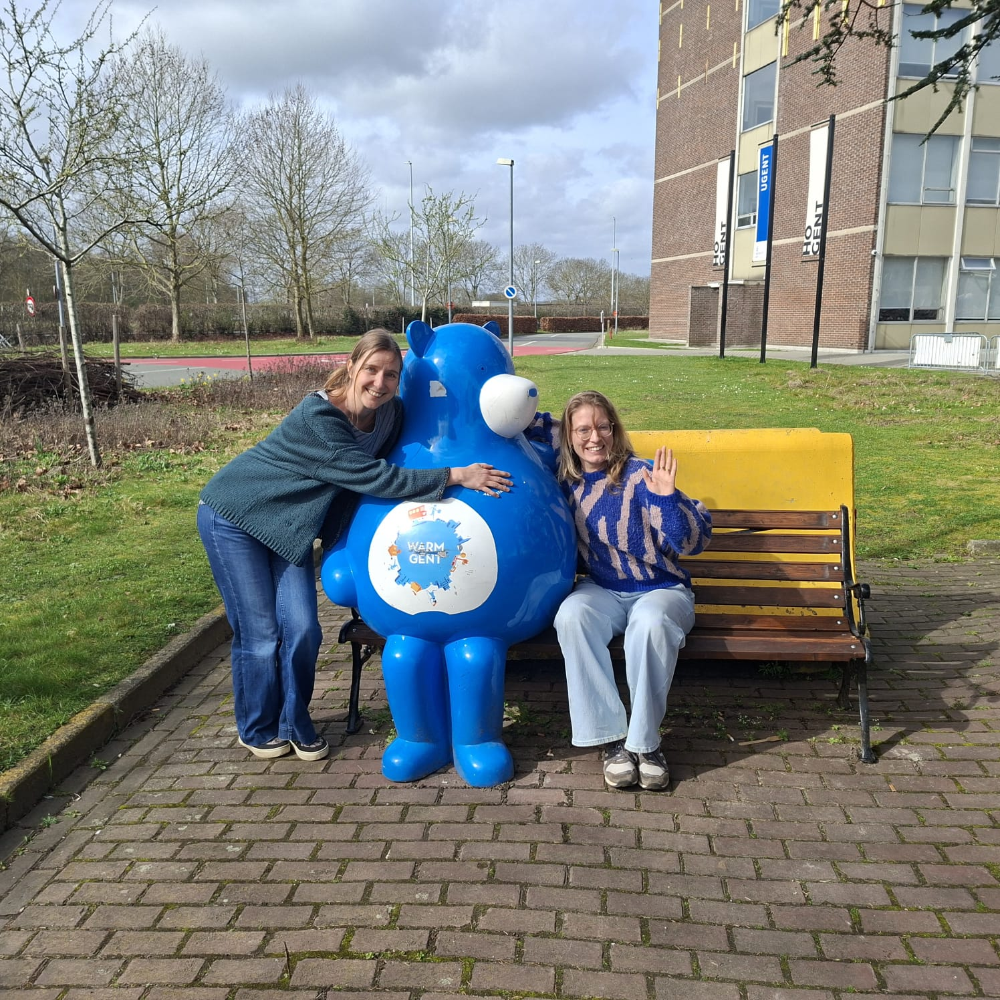

WEEK 2 – TIJDENS HET LEREN
Uitvoeringsfase: Zelfcontrole
⏱ Tijdsindicatie: max. 60 minuten
Waar week 1 draaide rond voorbereiden, draait week 2 rond één centrale vraag: hoe blijf ik goed bezig terwijl ik aan het werk ben?
1. Even terugblikken – Hoe gaat het?

Vorige week:
- zorgden we voor een goede taakanalyse,
- stonden we stil bij ons doel,
- werkten we een planning uit,
- en versterkten we onze zelfmotivatie.
Sta even stil bij volgende vragen:
- Heb je je eerste stap gezet?
- Wat lukte?
- Waar liep je vast?
- Hoe zit het met je motivatie vandaag?
2. Korte herhaling
Vorige week zoomden we in op een aantal ZRL-vaardigheden en pasten we deze bij onszelf toe in functie van ons doel.
Nu maken we al even de transfer naar onze leerlingen: hoe ondersteun je hen expliciet (WWWH), impliciet (modelleren, aanmoedigen, prompten,...) en indirect (oefenen!) in deze vaardigheden.
Oefening: Welke ZRL-vaardigheid of heden stimuleer je als leerkracht in onderstaande cases? Noteer en check daarna je antwoorden.
- Een leerkracht werkt met een check-out waarbij leerlingen moeten aangeven wat al wél lukt en waar ze nog in moeten oefenen.
- Vooraan de bundel rond duurzame energie staat een lijst met wat de leerlingen moeten kennen voor de toets. De leerlingen vinken aan wat goed lukt en minder goed lukt. De moeilijke punten worden in de klas besproken.
- Voor een spreekopdracht Nederlands mogen de leerlingen het onderwerp zelf kiezen.
- Een leerkracht die procentberekening wil aanleren vertelt de leerlingen over de solden in januari. De leerkracht vraagt zich daarbij luidop af of je meer uitspaart als er 20% korting is voor iets van 50 euro of voor iets van 20 euro.
- Een leerkracht laat de leerlingen nadenken over stellingen rond presteren en leren, en het gevolg voor leren en studeren.
- De leerlingen moeten een project doen rond duurzame energie. De leerkracht laat hen in duo’s nadenken over de stappen en die daarna inplannen in hun agenda.
- De leerkracht laat de leerlingen elke dag met kaartjes basiswoorden Frans 5 minuten inoefenen en noteren hoeveel ze er nog van wisten. Na twee weken krijgen ze hierover een toets.
- A Competentiegevoelens
- B Plannen
- C Doelen stellen
- D Resultaatsverwachting
- E Taakwaarde
- F Interesseprikkels
- G Doeloriëntatie
Antwoorden
- 1 A en C: Een check-out vindt plaats na een leermoment. ZRL is echter een cyclisch proces. Hoe je een leermoment eindigt bepaalt de start of de voorbereidingsfase van een nieuw leermoment. Hier draagt dit bij tot de competentiegevoelens en de doelen voor het nieuwe leermoment.
- 2 A en D: hier gaat het over doelen stellen én de verwachting dat een positief resultaat haalbaar is.
- 3 F: zelf mogen kiezen prikkelt de interesse.
- 4 E: dit zet in op taakwaarde, het nut inzien.
- 5 G: hier staat doeloriëntatie (presteren versus groeien) en de gevolgen ervan centraal.
- 6 B: de leerlingen plannen hier stap voor stap.
- 7 A en D: de leerkracht versterkt de (positieve) resultaatsverwachting evenals de competentiegevoelens.
Wist-je-datje: even stilstaan bij wat voordien aan bod kwam én waar we naartoe gaan helpt om structuur te geven en de kapstok in het brein te activeren. In het ZRL model van Dijkstra noemt men dit terugblikken en vooruitkijken (Dijkstra, 2018)
3. Vooruitkijken – Opzet van deze week
Hoe organiseer ik mij?
Tijdsbeheer, leeromgeving, hulp zoeken.
Hoe pak ik mijn taak aan?
Taakstrategieën en informatie verwerken.
Hoe hou ik mezelf fris en monter?
Zelfinstructie, interesse en bekrachtiging.

Deze week staan we stil bij de uitvoeringsfase van ZRL. Alle vaardigheden van deze week vallen onder één grote noemer:
zelfcontrole.
We vertalen de 7 vaardigheden naar 3 kernvragen:
1. Hoe organiseer ik mij?
2. Hoe pak ik mijn taak aan?
3. Hoe hou ik mezelf fris en monter?
Nathalie en Griet heten je welkom in deze nieuwe week en nemen je mee in wat er aan bod komt.
Klik hier om het filmpje te bekijken (duur: 2 minuten)
4. Zelfcontrole: Hoe organiseer ik mij?
Wist-je-dat (nog)- je?: Expliciete, impliciete en indirecte ondersteuning zijn drie effectieve ondersteuningsvormen voor ZRL (Peeters, 2022). Ook wij proberen jullie op deze manier te ondersteunen in het gebruik van jullie ZRL-vaardigheden!
A. De theorie

Onder organiseren vallen tijdsbeheer, leeromgeving inrichten en hulp zoeken.
We bekijken dit opnieuw via WAT, WAAROM, WANNEER en HOE (= expliciete ondersteuning).
WAT?
Onder organiseren vallen:
Tijdsbeheer
inschatten hoeveel tijd je nodig hebt en kan spenderen
Leeromgeving inrichten
de leeromgeving goed inrichten zodat je tot leren kan komen
Hulp zoeken
gepast hulp zoeken
WAAROM?
- Realistische tijdsinschatting voorkomt demotivatie.
- Een goed ingerichte leeromgeving vermindert afleiding en bevordert aandacht.
- Gepast hulp zoeken zorgt voor echte vooruitgang.
WANNEER?
Net voor én tijdens het leren.
HOE?
Tijdsbeheer
- Werk met (voor jou haalbare) tijdsblokken
- Plan minimum- én maximumtijd.
- Begin met wat de meeste mentale ruimte inneemt.
Leeromgeving inrichten
- GSM en andere afleidingen uit zicht of uit de ruimte.
- Alles binnen handbereik.
- Multitasken vermijden.
- Afleidende gedachten noteren voor later.
Hulp zoeken
- Eerst zelf proberen.
- Dan informatie raadplegen.
- Dan een gerichte hulpvraag stellen (niet laten overnemen).
B. Een voorbeeld

Tom en Mara zijn terug. Ze werkten vorige week al een doel en planning uit en gaan daar nu echt mee aan de slag.
Tom & Mara
Lees hieronder hoe ze het aanpakken. Denk na over de voor- en nadelen van elke aanpak, en in welke valkuilen jij mogelijks soms ook trapt. In wie herken jij je, in Tom of Mara? En in wie herken je jouw buddy?



Benieuwd wat wij vinden van de ZRL-vaardigheden van Tom en Mara?
C. Aan de slag

Tijd om te kijken hoe jij je organiseert en hoe de voorbereiding van vorige week daarin een rol speelt.
5. Zelfcontrole: Hoe pak ik het aan?
A. De theorie
Taakstrategieën
Beeldvorming
WAT?
Taakstrategieën zijn manieren om een taak inhoudelijk aan te pakken.
Enkele voorbeelden van effectieve taakstrategieën zijn:
- Actief verwerken van informatie
- Jezelf testen
- Je geheugen oefenen
- Gespreid oefenen
Beeldvorming gaat over je iets voorstellen of visualiseren zoals bvb. een resultaat, informatie, een gesprek, een activiteit,.... Dit kan in je hoofd zijn of op papier.
WAAROM?
Een goede taakstrategie verankert kennis sterker, verhoogt de focus en maakt het leren efficiënter.
Ook beeldvorming versterkt het leren en de focus.
WANNEER?
Tijdens het leren.
HOE?
Taakstrategieën
- Actief verwerken: schema’s, mindmaps, voorbeelden en vragen bedenken, een presentatie maken, een stappenplan opmaken voor een project n.a.v. de uitleg of werkbundel.
- Jezelf testen: oefeningen maken, je eigen vragen beantwoorden, het resultaat van je acties in kaart brengen.
- Je geheugen oefenen: meermaals kort herhalen zonder spieken.
- Gespreid oefenen: taken afwisselen en op een later moment hernemen.
Beeldvorming
- Werken met icoontjes, tekeningen, schema’s of je het eindresultaat voorstellen.
B. Een voorbeeld
Herinner je je ons lerarenteam van vorige week nog? Ieder had zijn eigen idee over het aan de slag gaan met de nieuwe leesmethode. Deze week zijn ze er allen actief mee bezig. Ieder heeft zo zijn eigen manier om deze taak – het implementeren van de nieuwe methode – tot een goed einde te brengen. Kan jij de aanpak koppelen aan de juiste leraar?
Neem een blaadje papier en noteer welke cijfers met welke letters overeenkomen. Opgelet: een antwoord kan meermaals voorkomen.

Oefening 2: Welke effectieve taakstrategie/strategieën herken je bij volgende leraren?
- Fien maakt een kort schema van hoe ze de les zal aanpakken met de nieuwe methode. Puntsgewijs lijst ze op wat er aan bod zal komen en naar welke voorkennis ze zal teruggrijpen.
- Mon verdiept zich in de leerkrachtenversie van de methode en maakt voor zichzelf een overzicht van wat hij belangrijk vindt en waarom.
- Luca denkt na over hoe hij via een exit ticket al bij de eerste lessen kan checken of de leerlingen weg kunnen met de methode en/of hij moet bijsturen.
- Milan ging vorige les al aan de slag met de nieuwe methode. Hij overloopt voor de nieuwe les mentaal de vorige les: wat liep vlot, wat minder vlot, en waar moet hij deze les extra aandacht aan besteden?
- Kim verdiept zich eerst in de digitale kant van de tool, en de oefeningen die leerlingen kunnen maken met de methode. In plaats van direct heel wat oefeningen voor de komende weken klaar te zetten geeft ze elke dag een kleine oefening in. Ze heeft het snel onder de knie.
- De zorgleerkracht vindt de nieuwe methode maar niets. Ze gaat hierover in gesprek met de directie. Voor het gesprek overloopt ze wat ze allemaal gezegd wil krijgen in haar hoofd.
- A Actief verwerken
- B Jezelf testen
- C Je geheugen oefenen
- D Gespreid oefenen
- E Beeldvorming / visualisatie
Oplossing bekijken
- 1 A en E – Een schema maken en structureren is actief verwerken maar ook aan beeldvorming doen.
- 2 A – Een samenvatting maken is ook actief verwerken.
- 3 B – Met een exit ticket test Luca het resultaat van zijn aanpak.
- 4 C en E – Milan grijpt terug naar een vorige les en graaft dus in zijn geheugen. Hij visualiseert hoe dit verliep.
- 5 D – Kim gaat gespreid oefenen. Dit is in het begin wat moeilijker maar zal haar op lange termijn veel tijdwinst opleveren.
- 6 E en C – De zorgleerkracht gebruikt haar verbeeldingsvermogen en stelt zich voor hoe het gesprek zou kunnen lopen, en past haar voorbereiding op het gesprek hierop aan.Ze oefent ook haar geheugen door al eens voor zichzelf haar argumenten op te sommen.
Wist-je-datje: Al even teasen naar de transfer: Bovenstaande lijkt heel erg op leren leren. Hoe studeer je iets? Hoe pak je iets aan? Het beste is – zoals met alle ZRL-vaardigheden – om dit te integreren in je les.
Wist-je-datje: Studenten in het hoger onderwijs gebruiken veelal ineffectieve leerstrategieën (namelijk lezen en herlezen). Lezen en herlezen zorgt voor herkenning en een vals gevoel dat je het al kan. De effectieve leerstrategieën van hierboven zijn wat moeilijker en dus minder comfortabel. Helaas, om effectief te leren moet het moeilijk zijn….
Wist-je-datje: Het voorstellen van een positief resultaat je motivatie verder kan beïnvloeden. Stel jezelf het voldaan gevoel voor dat je straks zal hebben als je dit leerpad terug hebt doorgenomen.
C. Aan de slag
Tijd om te kijken welke strategie jij gebruikt wanneer je iets nieuws leert, vakinhoudelijke of didactische informatie verwerkt (bvb. de nieuwe leidraden van leerpunt) of de inzichten uit een bijscholing wil meenemen?
Ga jij deze nieuwe inhoud gaan verwerken door bvb. samen te vatten, een presentatie voor je collega’s te maken, een spiekbriefje te maken, een poster op te hangen in je klas/lerarenkamer,…
6. Zelfcontrole: Hoe hou ik mezelf fris en monter?
A. De theorie
Tijdens het leren kan je jezelf bij de les houden door jezelf instructies te geven en tegen jezelf te praten, je interesse (terug) te prikkelen en jezelf te bekrachtigen.
WAT?
- Jezelf instructies geven
- Je interesse prikkelen
- Jezelf bekrachtigen
WAAROM?
Om aandacht vast te houden, opgeven te voorkomen en motivatie te herstellen.
WANNEER?
Tijdens het werken — vooral bij dipjes.
HOE?
- Door hardop te praten of jezelf instructies te geven.
- Door jezelf te herinneren aan waarom je het doet.
- Door stil te staan bij wat je interessant vindt of vond.
- Door successen te vieren en jezelf een schouderklopje te geven.
B. Een voorbeeld
Ook Griet en Nathalie zijn zelfregulerend aan de slag. Een website maken voor een professionaliseringstraject als niet IT-er, toch wel iets nieuws om te leren. Gelukkig gebruiken we onze ZRL-vaardigheden zodat jullie elke week verder kunnen.
Klik op de link en hoor hoe wij onszelf hiertoe motiveren.
Wist-je-datje: Jezelf toespreken in de tweede (je) of derde (je voornaam) persoon helpt om jezelf te sturen!
C. Aan de slag
Werk verder in je leerdagboek en denk na over hoe jij jezelf tijdens het leren weer op de rails krijgt.

7. Uitsmijters
Graag nog eens de ZRL-vaardigheden op een rijtje ? Probeer de juiste ZRL-vaardigheid op de juiste zin te kleven. Scroll terug om jezelf te corrigeren.

Wil je je verder verdiepen? Hieronder vrijblijvend extra materiaal rond effectieve taakstrategieën.
Nog niet voldaan?
Het consortium van UGent en UAntwerpen biedt heel wat informatie rond zelfregulerend leren en taak/leerstrategieën. Surf naar proev.be
8. Vooruitblik
Volgende week kijken we verder naar de uitvoeringsfase en bouwen we hierop voort.

Tot volgende week. Veel succes! Warme groeten van Griet, Nathalie en warme William
